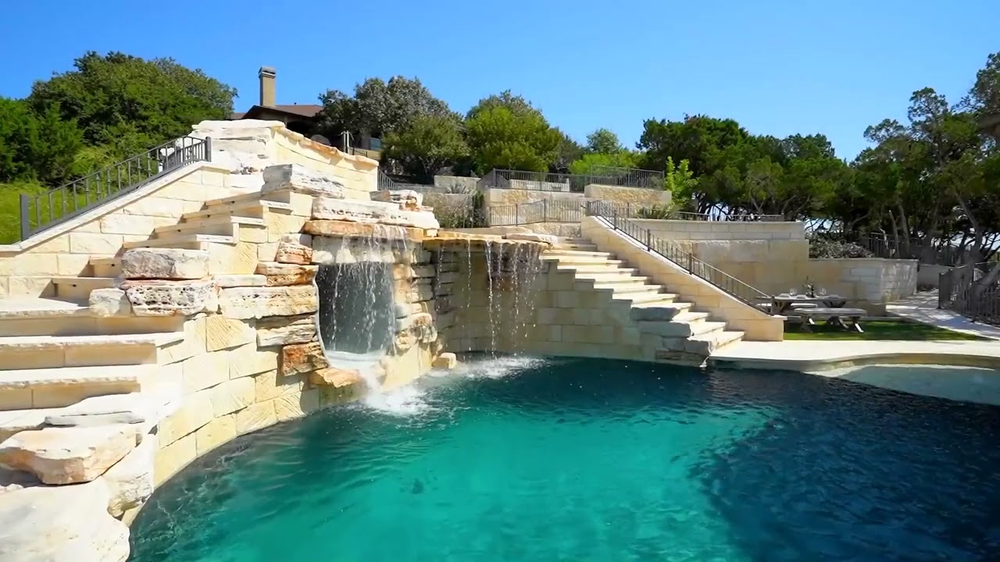

Luxury landscape design + build · Greater Austin
Designed for Texas. Built to last. Made to be lived in.
Landscape design, hardscape, licensed irrigation and certified Azenco pergolas and MagnaTrack screens — one family firm from the first sketch to the final walkthrough.
- Since 2001
- Licensed irrigator LI-0030113
- BBB A+ · Accredited
- 5.0 on Angi
One company. One outdoor vision.
We design and build outdoor spaces that feel intentional, livable and unmistakably Texas — rooted in native plants, smart water use and craftsmanship made for the heat.

Drawn to scale. Built by the same hands.
Master plans and 3D concepts, then stonework, decks, turf, water and licensed irrigation from one crew.
Explore design & buildShade, rain cover and open sky — on demand.
Certified Azenco Outdoor pergolas and MagnaTrack motorized screens, planned with the patio beneath them.
Explore pergolas & screens
Amenity spaces residents actually use.
Courtyards, pools, entries and dog parks for communities across Greater Austin, with weekly progress reports and monthly site audits.
Explore commercial work
Explore a finished project
One deck, four trades.
A covered outdoor kitchen on a composite deck — tap the markers to see what went into it.
-
Aluminum frame with insulated roof panels and a built-in gutter — shade and rain cover with no staining, ever. Azenco pergolas
-
Moving air makes a covered patio usable on still August evenings. Pergolas & screens
-
A built-in grill and stainless access doors set into a stacked-stone island. Landscape construction
-
Counter space beside the grill, with a weatherproof outlet on the post for appliances. Landscape construction
-
Boards that hold their color in full Texas sun, with far less upkeep than stained wood. Landscape construction
-
Slim black balusters keep the view to the yard open. Landscape construction
Recent work
Homes and communities across Greater Austin.


Project film
See a Finch landscape from the air.
Ted Finch’s drone film “Lajitas” — limestone waterfalls, terraced stone steps and a turquoise pool, seen from above.

Film by Ted Finch · plays from YouTube
Describe your backyard. Get a plan in seconds.
Tell us what you want from your outdoor space. The planner matches it to Finch’s services, products and process, then turns it into a brief you can send straight to the team.
- Tap what you want, or describe the space in your own words.
- Get recommended services, products, ideas and Finch’s real costs.
- Send the plan to Finch in one click.

“The crew was amazing! They did everything with care and professionalism.”
How it works
Four steps, and the first one is free.
Residential design plans in the Austin area typically run $1,500–$5,000, and installation projects start at $3,000.
- 01Free on-site consultation
We walk the property with you, talk through goals and budget, and explain how design works.
No charge - 02Design
A 2D master plan, then 3D graphics or video so you can see the space before it is built. Revise until it is right.
Fee quoted after consult - 03Build
In-house crews install everything in the plan. Weekly progress reports with photos keep you informed.
Projects from $3,000 - 04Walkthrough
A final walkthrough together, irrigation set for the season, and a space ready to live in.
Handover
Start with a conversation
Let’s talk about your outdoor space.
Your first on-site consultation is free. Call, request a callback, or sketch out your project with the AI planner first.
(512) 934-3891